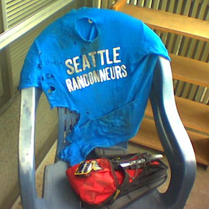
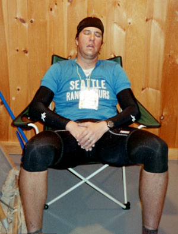
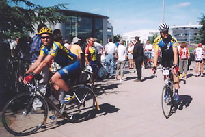
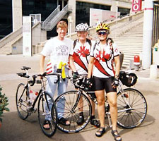
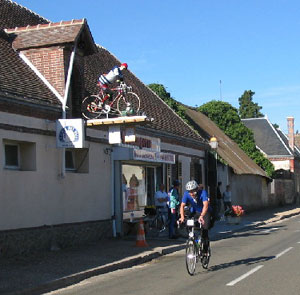
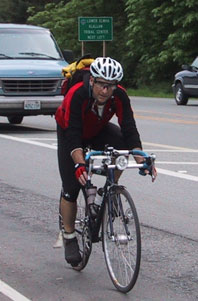
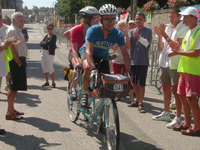

Volume 8 Issue 4 - August/September 2003
2004 SIR Brevet Schedule
A Classic Low Point
Raid Pyreneen
Riders on the Storm
2003 PBP: A Novice's Account
PBP 2003 in 59 hours and change
SIR Accomplishments in 2003
2003 SIR 2000 km Club

NOTE: Please send any equipment reviews, PBP insight or ride reports for the Sept/Oct newsletter to Jon Muellner! There's lots of rides happening so I'm sure there's oddles of stories!
For those of you that ventured to France - welcome back! I hope all of you enjoyed the experience. It was really an amazing event!
If this was your first 1200 km (or 10th) we'd like to know if SIR and its members provided enough guidance and help to make PBP successful for you. What do you think we did that helped? Did we do enough? What could we do more of? What was missing from your knowledge base and plans that could have made PBP (or any 1200 km) better?
Please send your feedback to Mark Thomas, Terry Zmrhal, Jon Muellner. Thanks!
Here's the address for the postcard place that had the crepes and cafe!
Paul ROGUE
16 Rue de Bretagne
La Tanniere
53220 Montaudin
France
SIR Email List
It's a great way to share info, ride schedules, car-pooling to events and training with other SIR members. To get on go to http://www.phred.org/mailman/listinfo/sir. It's easy!
By Mark Thomas
Thanks to all for a great year in 2003 for SIR. From the 90+ riders on our first 100k to the 11 riders on the last 1000k, we had great turnouts. Many brevet kilometers were ridden in all sorts of conditions on some of the most interesting terrain in Washington. Congratulations to the many riders who completed a Super Randonneur series. Congratulations to the PBP participants. Thanks to the many volunteers who helped make the season special.
 Ken Carter's jersey after his accident July 4th during a SIR 300 km. He mended well enough to put in a stellar ride at PBP. According to Ken, "SPENCO wet bandages are wonderful". Next year should be another great one. We have a full calendar of events, with two full SR series, two 100k rides, a 1000k brevet, and a fleche.
Spring series:
3/6 100 km
3/20 200 km
4/10 300 km
4/23-25 Fleche
5/8-9 400 km
6/5-6 600 km
6/25-27 1000 kmSummer series:
7/10 100 km
7/24 200 km
8/14 300 km
9/4-5 400 km
9/25-26 600 kmIt is never too early to start thinking about volunteering to organize or assist with any of these events. Existing routes can be used or new ones can be developed. Please let me know if you are interested. It takes many volunteers to pull off a full schedule of events like this.
We also need someone to help Terry Zmrhal with memberships.
By Mark Thomas
In a 1200 km brevet such as Paris-Brest-Paris, a rider can usually count on having some highs and some lows during the ride. The highs were plentiful for me on PBP 2003 - the glorious "red snake" of taillights stretching off into the Normandy distance the first night, the crepes/postcard guy outside Fougeres, the scenic climb and fun descent of the Roc Trevezel, the sight of so many SIR members riding so well and having the time of their lives, the town party celebrating my arrival in Grace-Uzel, the roadside cafe stops, the carload of smiling young French women informing me that "they could use a man that can do Paris-Brest", the steady companionship of Peter McKay and Greg Zaborac through all the days and nights of the ride, the "bon courage" called out by many an elderly French woman, the seeing of old friends, the making of new friends, the joy of finishing my tenth ride of 1000km or more, etc., etc.
  Peter McKay and Mark Thomas finish PBP 2003 Funny thing, though - my lasting memory of the 2003 PBP may be the classic low point that I passed through in the pre-dawn hours of Friday morning between the Mortagne au Perche and Nogent le Roi controls. I was riding, as I had for nearly every kilometer of the ride, with Peter McKay and Greg Zaborac. (Greg is a randonneuring friend from Illinois. We met on London-Edinburgh-London in 2001 and have now cycled together on LEL, Rocky Mountain 1200, Boston-Montreal-Boston, and PBP.) The three of us had more or less intended to ride through Thursday night and press on to the finish. We had managed at most a catnap in Mortagne - not more than an hour and probably less.
A few hours out from Mortagne, crabby from lack of sleep and wondering where my cycling legs had gone, I pull off onto a side road, announcing without any explanation that I had to stop. With dramatic flair, I toss myself into the grass by the side of the road. With drama taking the place of good sense, I neglected to clip out of my pedal on one side, which made the whole maneuver somewhat painful. Not so painful as the discovery that the "grass" was, in reality, a thicket of blackberry vines (or roses, or something - I didn't bother to examine too closely). Ad hoc nighttime acupuncture was not on my list of not-to-miss PBP experiences, so I began to pick myself up. With my wool jersey and wool arm & leg warmers, this was a bit like unpeeling Velcro, but soon I was free.
Meanwhile, a solicitous Peter McKay is trying to help me sort through my options at that point. He points out that there is a patch of real grass just ahead and that he would be happy to walk my bike over there. A short nap, he points out, might be just the thing to rejuvenate me. He and Greg would be happy to wait for me at the control in Nogent. Dispiritedly, I mutter that if I go to sleep, "I may never wake up!" I'm sure that what I meant was that I might sleep right through the closing time of the next control. In my state, however, it sounds more like Peter's riding companion should now be on suicide watch.
I refuse to allow Peter to walk my bike, choosing instead to ride around the corner to the rest spot. As it turns out, the tough moment is already passing, and I don't stop. In fact, I start cursing my own stupidity and riding like a man possessed. (At that point in the ride, this probably meant that I was riding at 11mph instead of 9, but I felt like Tyler Hamilton holding off the peloton). The next town provided a coffee & croissant stop. After the stop, the sky was light and the remainder of the ride was great, glorious fun.
By Jon Muellner
We all met on July 31 at Nick and Jan's Cycle Lodge in Biert. There were six of us, 4 hilarious Brits (Martin Newsted, Terry Beach, David Ward and Kevin Brown) and 2 US riders (myself and Bill Dussler). We had a few days to explore the area and get to know each other before starting on Monday. We climbed my first Pyreneen climb, the Col de Saraille, then Col de Latrape and the ascent to Guzet Neige. It was hot! We all had lunch at the top before the descent and a long ride back to the Lodge. The next day, Bill, Terry and I headed for Col de la Crouzette (a very steep bugger at 13-14%), Col de Peguere, Col de Caoughnous, and Col de Portel where we had some spectacular views from Tour Laffon of Mt. Valier and the surrounding peaks. David, Kevin and Martin headed to St. Giron because Martin's crank spider was cracked and needed replacing. Every evening Nick cooked us up some fabulous meal and we ate and drank in the fading light. Sunday we drove to Hendaye.
The Raid started on Monday August 4th in Hendaye on the Atlantic coast and we got there a day early to play in the surf and drink beer on the promenade. Nothing like topless beaches and big waves to pass the time! It was a nice casual break before the days of climbing. Monday we headed out of town in what was to become ever increasing heat...how hot we were soon to find out. We had 100 hours to complete the 720 km route.
The first day was just under 190 km and the enthusiasm was high as we kept a fairly high tempo on the coastal road and onto the first small cols and two control stops to get our cards signed. We dipped briefly into Spain at Dancharia and followed the valleys as they slowly went into the mountains. By early afternoon it was over 100 degrees and the headwinds were vicious, like having someone point a hot air dryer in your face...we followed the "Route de Frommage" to Larceveau and the temps had gone over 110 degrees. Three of the six riders had already abandoned due to heat problems. I felt really bad for them but it really was hellish. Myself, Bill and one English time trialer Dave remained on course. I was dizzy with heat exhaustion. The climb to Col d'Osquich was so painful it took every ounce of concentration to simply pedal forward; no trees to block the sun and no wind to cool down with. I really wondered what the hell I was doing, but also knew I would not quit.
At the summit cafe I was having problems getting off the bike and walking over to the shade to sit down, as even there the heat was intense. I sat for over 45 minutes consuming lemonade and water, trying to cool my core temps down. We were barely half way through the day! Dave was faster and headed off and Bill and I slowly pedaled our way to Tardet where the next control was. There we really had to evaluate if we could even finish as the amount of liquids we needed to consume were not nearly enough, every sip immediately evaporated out of my body. We had scores of bananas and salty chips. Dave headed on and we found some shady pave in front of a store and lay on the cool stones. We slept for a brief time and as evening approached we were glad to feel a slight drop in the temps. There were rolling hills now to the hotel at Arudy and the sun started to go down. We turned on lights (the other raiders thought we were foolish to carry the weight! Ha!) and finally arrived at Arudy after 10 p.m. Nick the ride organizer was frantic with worry, but relieved we were OK; he had never had anyone come in after dark, nor have anyone ever DNF on the first day. We were happy to be done and reveled in the cool night. Martin, Kevin and Terry helped get our bikes put away and made us feel at home after a extremely challenging day. The owner of the hotel, an older woman shook her finger at us and then proceeded to find us some things to eat. We must have looked too pathetic to admonish for long...
Day 2 we needed to start earlier and avoid some of the heat which was already building and would be our constant challenge for the rest of the week. By 7:30 a.m. we were on the road, first up the Col d' Aubisque and Col de Soulor, both beautiful climbs. The Gorge de Luz on D921 was hot and long on the way to the Col du Tourmalet, but I was feeling better knowing today was only around 110 km. The final climb was spectacular, and we stopped at the cafe in Luz-St.-Sauver for drinks and a secret control. Then the big one, the Tourmalet, lots of switchbacks, dodging sheep on the long ascent and hearing the thunder and lightning as we approached the top of the col. I was the last one to the top (my usual position) and enjoyed a good mocha and photos before we plunged down the other side to Le Duex Cols Hotel in St. Marie de Campan. Descents are my forte and I was able to catch everyone on the downhill. 75-80 km speeds and the occasional bull or auto passing as we streaked down the switchbacks through La Mongie to the hotel. It was a great day and helped ease the turmoil of the first.
Wednesday, day 3 dawned hot for the coming 176 km and surprisingly I felt better and stronger than the first two days. We all headed out together in a fast paceline first over the Col D'Aspin, on a beautiful morning and with a tree-shaded climb it allowed a good pace and some great quiet riding. Next came the Col de Peyresourde, which was long and came up from the valley floor into ever decreasing tree cover. By the last 3-4 km the road was bathed in sun but even though the temps were high again, I must have been getting acclimated to it as I felt very good. There were a number of other day riders out for the climb and a couple of Basque team riders came by me quickly ascending the slopes ahead. I would see them coming up from the other side as I was heading down later on. At the top of the col, a small cafe had these funny wooden puzzles that you could make into windmills and when they were built the owner would show you how to blow into them to make the wheel spin...except that when the unwitting tourist tried it, talc blew into their face! It was very funny and every one in the cafe got a good laugh. I had a couple of lemonades and filled my bottles with Nick at the truck. It was time to head down and I left before a French rider could continue his story of how Armstrong wins because of EPO...Dave and I stopped for lunch at a cafe in Chaum, being a good hour ahead of schedule and Bill came by to say hello before he jumped ahead. The next climbs were the Col des Ares, Col de Buret and the Col de Portet d'Aspet. Each progressively more wonderful even with the heat. I stopped at the Fabio Casartelli Memorial and thought about all the great riders that had ridden these same mountains, some of the switchbacks would be nearly 15% grades and here I was toodling up them -at race pace this must be incredible! The descent from the top of Col de Portet d'Aspet into St. Lary was one of the most memorable for me, though the pavement had started melting again and I nearly "Beloki-ed" myself coming around the first curve into St. Lary. After that was the long valley ride to Biert where we stayed at the Cycle Lodge and enjoyed another wonderful meal of paella and wine prepared by Nick. We met up with Steve from Australia who had just ridden the same 3 day route we did in just 2 days!
Day 4 was another day of sunshine, but cooler in this part of the Pyreneens. We started with the small Col de Caougnous and then climbed the Col de Port on our way to Aux-le-Thermes. Steve and I had lunch together after battling some traffic on the N20. It was very nice and I enjoyed his company a great deal. We saw Bill and Dave come past and then headed up the Col de Puymorens after enjoying a refreshing cassis beverage made with local spring water. The rain started falling here and the traffic was horrendous as people were driving to Andorra for cheap cigarettes and booze. We just rode in the oncoming lane and passed them all as the crawled up the long slopes. At the top we had sandwiches and I borrowed some arm warmers from Martin for the descent. The next few climbs were gradual and the terrain and environment was changing to reflect our entry into the Mediterranean-influenced side of the mountains. Even the smells were different. We headed over the Col de Louis, Col de Rigat and the Col de Perche before ascending the very long slog over Mt Louis. It was wide open country and you could see for miles. We powered down the gorge on the first real rough pavement and I lost a bottle on the way down, thinking it was going to knock Steve over! This was also the first place I was nearly taken out by an idiot in an SUV that was passing two caravans going uphill as I headed down. I could feel his mirror brush by my shoulder as I hugged the rock wall. It was quite terrifying.... The stop for the night was in the town of Villefranche-de-confluent, a beautiful walled city where I went out for beers with Terry, Martin and Kevin.
Friday the 5th and final day of the Raid sent us quickly into Prades for the control and then screamed along as the route dropped to the Med. Dave and the rest set a mean pace of over 35 km an hour and I was dropped within the first 15 km. They waited a bit later on the shortcut past Ille-sur-tet and then started the fast train again. I could barely hold onto their wheels as we streaked along. At one point they curved to the right at a carrefour (roundabout) and in my rear view mirror I saw Nick turn the support truck on another road. I stopped and went back but the others continued on and when I caught Nick he said to just keep going and maybe the others would find their way. Now I was in the lead for once! I rode along for two hours and didn't see them at all as I glimpsed the sea for the first time and headed up and down through Argeles-Plange and Port Vendre, each coastal town choked with traffic and pedestrians. I powered up the last few climbs in the big ring until the Cap l'Abelille, which was a long winding climb that seemed to never end. That was OK as I knew I was in the last 20 km of the ride and at only 6 km to go Dave caught me! He motored ahead and then Terry passed me in the last 2 km. We streaked into Cebere and got cards stamped at the Hotel la Dorade just before 12 noon. Minutes later we were enjoying a well earned beer and congratulating ourselves on a great ride. A 12 hour party ensued with my Aussie friend Steve and I breaking into someone's hotel room at midnight as we had forgotten the keys...Dave felt the effects of our generous consumption...a few hangovers the next day kept us all reserved as we said our goodbyes and everyone headed off to other places. I'll miss them all!
In retrospect, the Raid Pyreneen was a stupendous ride, with beautiful cols, lovely towns and villages, new friends and great support from Nick and Jan at Pyreneen Pursuits. The food was fabulous and only the heat really challenged the soul. It was the hottest temps in recorded history and we survived. I felt stronger every day and my Heron Road bike was reliable and steady both climbing and descending. I hope to ride again with my new friends Martin, Terry, David, Kevin and Steve, who were a never ending amount of fun to be with. Terry's conviction that "cheese is the work of the devil" makes me want to mail him some for X-mas...
I spent a total of 14 days in the Pyreneens, and when not riding the Raid I headed to St. Giron for two days of trying to get a new bottom bracket and fixing a creaky pedal and the rest riding some other nearby cols including the beautiful Col de Catchaudegue (that one twice as I forgot my pocketknife on a picnic one day and had to ride up again the next day to retrieve it!) and the rest of the time I hung out at the Auberge du Gypaète Barbu with owners Cam and Pascal.
Raid 450 miles (725 km) in about 98 hours. Total mileage in the Pyreneens was around 1100-1200 km.
For more info on the Raid check out Pyreneen Pursuits
By Sarah Gallazin & John Little
We were lying in a ditch in rural France. Our bikes stood guard, upright, beside us. Our excess clothes, gloves, helmets, and the contents of our pockets were strewn on the grass, John was asleep. Hoards of bikers seemed to whiz by us on the road, in the direction of Paris. With 220 kilometers to go, we had given up. The heat of the day and the 1,005 kilometers we had already biked had won. We kept falling asleep on our bikes, and it seemed PBP had claimed another 2 victims.
 Sarah Gallazin & John Little My husband and I were in France to ride the PBP. Everyone who makes it to the start line has endured challenges beyond imagining, in qualifying for this event. They are all winners. Especially those riding qualifying rides on the "Wet" coast. It is a crime when a rider does not finish this ride. So much time, effort, and money are expended.
A voice in my head told me I was not well enough to start the ride. Seven days before leaving for France, I came down with a sore throat and a bad cough. The cough did not go away. I felt we had invested so much emotional, physical, and financial energy, that I was compelled to ride.
The first night was scary. We started at 10 pm with 700 riders in our wave (out of a total of 4,069 riders) riding shoulder to shoulder into the dark. Even though I had ridden the 1,000 km distance, I had not tested my ability to endure sleeplessness. On the first night I kept wanting to lie down between 3 - 5 am, just before dawn. With the 10 pm start, the first sleep 90 hour riders might hope for is 24 hours after they begin.
We arrived at the first control at 141 Km, 7 minutes ahead of our plan. We had been passed by many of the second and third wave riders who started later than us. I knew that I could not keep up the pace.
I convinced John and our friend, Garry Elmitt, to slow down for the next 2 controls. It was hell. I was achy, weak, and felt flu-like, not to mention sleep deprived. Every control, I would tell John, "I'm dropping. I'll just have something to eat, and see how I feel, but I doubt it..." And on we would go to the next control, just to repeat the same scenario. Saint John was ever patient.
There were a few reasons I kept going. On the first night we rode into the darkness of rural France, and could see only the shapes and shadows of the beautiful villas and treed hillsides and farms on our route. I knew if I dropped, I would miss all the scenery. Also the thought of the "sad, lonely train ride back to Paris" kept me going. I had dropped in a ride this summer, and the thought of the plane ride home as a DNFer was unbearable. As new Randos, Cheryl Lynch had vouched for our riding abilities, and even our character on more than one occasion; how could I DNF? I could not add a 51 year old Canadian female to the DNF stats; everyone would think I was too old! Stupid reasons. I was too sick to ride. I knew it after the first night.
Garry was riding too fast, for me; we had to let him go. I felt guilty as St. John was now forced to ride my snail's pace. Our first sleep was on a table in the cafeteria of the control at Loudeac. I tried to stretch out on the cafeteria floor, but too many bodies, and a spilled can of coke chased me to the table. John slept across from me with his arms folded on the table and his head on his arms. The alarm on my watch woke us. I sat up at the cafeteria table rubbed my sleepy eyes, as we had only had 15 minutes sleep. A couple of French cyclists were having breakfast beside us, at our table. I was wakened with the most cheerful "Bonjour, Madam". I just had to laugh.
After possibly the best hot croissant ever baked, and coffee for breakfast, we tried to ride again. That was short lived. Fatigue was the ever-present demon. We kept trying to stop for power naps. Eventually we succumbed. I spread out my space blanket and John and I slept in a cattle field, at the top of a beautiful misty hillside, in the dawn light. And it was cold. We woke in an hour and our teeth were chattering. Again a rude shock to the system. It is very difficult to operate a bike when your body won't stop shaking. Oh, but it was pretty scenery. We literally lived on caffeine pills. Six or more a night, for four nights. It kept us going. The downside was that when an opportunity to sleep came, the pills made it impossible.
Because I was sick and rode slowly, we used up all our sleep time and were constantly chasing a time deficit to make the closing times of the controls.
On night 3 we rode with SIR members, Amy and Robin Pieper. Our caffeine pills helped them as well. The ride became a black road ahead, following lights up endless hills, and falling asleep on my bike. Thankfully I would wake up when I hit gravel on the side of the road. At one point I didn't know if John was in front or behind. Me, I was so out of it.
Day 3 was hot. We slowed to a crawl after the sun got high in the sky. Falling asleep, and weaving, even a visit to a local café for some coffee did not help much. We found our ditch and had our 1 hour sleep. This is where I believe we had some "divine intervention". It was like I had been struck with a thunderbolt. I wanted to try to finish in time - so many riders were riding by our ditch, all hoping to make it, riding like bats out of hell. I wanted to go out in a blaze of glory, to finish, or explode in the process. I believe Roger Street and my friend Denise Mason had a lot to do with getting us going. They were watching over us. I was riding with Denise's bandana, she died of cancer in May. Roger had been our patron, and he always believed in us.
I woke John up. He agreed to go for it. He said "stick on my butt". I did. This is what he had wanted to do for the entire ride. We passed so many riders saying, "This train's goin' to Paris, hop on!" And they tried. We rode with several people for a short time, but our pace was too fast. We were "on fire". So many hills, so few directional arrows....but we made it to the control.
The spookiest experience was the rural road to Mortagne Au Perche. We started out with a few riders. As the night wore on, our riding companions disappeared and the roadside ahead became littered with sleeping riders beside their bikes, reflective gear glinting eerily in our headlights. Victims of the road. It was like a war zone - bodies everywhere. Oh, the hill to that control! The up hills were killer, the down hills icy cold and endless. It seemed we would never reach the control. Some riders passed us going very fast. We thought they were just frivolously racing. We met Stephen Hinde who said there was a lot of up and down before the town. We had no idea how far it was to the control. I looked at my watch, wondering when the torture would be over. I noticed I only had 15 minutes to make the control cut off. I booted it. I made it to the control, but John was no where to be seen. Last time I rode with him, he was cursing the hills, the darkness, the cold, etc., approximately 10 km back.
I checked in to the control. Then I waited in the still cold air for John. Was this the end? Finally he rode up. I told him to ride up to the door, jump off his bike, and run into the control. He only had 2 minutes until cut off! Now we knew why those riders were racing up the hills!
We had no sleep since the ditch. Weariness was setting in. The last 82 km had been hard. It seemed like we were riding around in circles. The entire course was crudely chip-sealed. It was taking its toll on our wrists and crotches. There was a lot of standing on the pedals. And new swear words were discovered.
We made it to the last control - no time to sleep now. Another great meal, and off we went. The sun was hot, but thankfully a breeze cooled us. John was fading and wanted to stop for a coke, as water was not quenching his thirst. Of course, there were no stores open on the route. Thank God we didn't get a flat in this section. I was not capable of fixing anything! It was a very long 58 km.
We had a motorcycle escort into town. Finally the finish line. Some of our friends calling our names. Stashing our bikes and running to the control. We became PBP finishers.
A week later back at home in Vancouver, my doctor recommends I be tested for low iron levels, as I seem to be exhausted for some reason!
Ray Wight of Prairie Randonneurs said that PBP is scheduled every four years, so riders have time to forget. Fortunately, I have a very good memory!
By Owen Richards
Hyperbole et Revelation
Before the first night and day were through, this novice realized those hyperbolic tales had been understated: moon rising over twisting trails of red taillights, sun rising over misty fields & allees of poplars, ancient spires signaling the next village, families lining the route crying 'bon courage', courteous motorists waiting patiently as cyclists ride four abreast.... Oui, on ne peut pas imaginer en les Etats Unis.... mais il y un autre revelation: il n'y a pas de 7-11's!
 Owen Richards August 18-22, 2003 marked the 15th running of "Paris-Brest-Paris": first held in 1891 with 206 riders, this year's event drew over 4000 participants from around the world, including quite a few newcomers unfamiliar with local customs. What most american novices are unprepared for is the absolute dearth of chain stores along the route: nary a McDonalds or Starbucks to be found. On arriving in these old stone villages, the only dietary offerings are in etrange single-purpose shops called boulangeries, creperies, patisseries.... Alors, on doit abandonner les preconceptions et manger comme les francais....
Paris-Brest
The Bretagne people especially have a strong affection for this ride: bicycling is a way of life; local heros are Tour de France winners; even grandmeres et enfants turn out to enjoy the spectacle. More telling though: there is a pastry named for the ride. I sampled my first 'Paris-Brest' just hours before the ride's start: joining Cindy & Georges Yates and Amy & Robin Pieper at the pre-ride dinner, our trays piled high with carbo-loaded delicacies, a highlight was this donut-shaped confection. The 'Paris-Brest' is shaped like a bicycle tire, pumped to bursting with chocolate cream, sprinkled with powdered sugar. Cindy explained (hey she's a novice too...how does she know this stuff?) that the crumbled almonds represent the macadam fragments one's tires accumulate over the course of the ride. We would soon test this analogy....
Auspicious Parti
Seven of us (Mark Thomas, Peter McKay, Bill Dussler, Dave Read, Greg Cox, Greg from Chicago, and myself) arrived together at the starting area about 9pm, joining the hordes of 90-hour 'cyclotouristes' crowding toward the 10pm starting gate. The mood was festive as the speedy 80 hour 'etoile' group (literally stars) had just departed, and everyone was anxious to hit the road. The heat wave had broken, last night's torrential rains had passed, the moon would soon be rising: all signs were auspicious! A french couple with fenderless bikes (un autre revelation: fenders are far from 'de rigeur' if one is not from Seattle) offered further assurance: 'pas de pluie mais sans doubt un peu du vent' - the prediction would hold true -- not a drop of rain & only some mild wind, mostly tail toward the end...
Finally making it out of the gate at 10:45pm with the fourth increment of 90-hour riders, the most basic lesson of Randonneuring 101 was soon set aside: racing into the moonlight at full tilt, we simply could not withstand the adrenaline rush of the endless string of taillights winding into the distance. Bill D noted a feature of PBP: always one more rabbit just ahead. Spending much of the night streaming past riders from the earlier starting groups, we eventually spread out at our own paces and reached the first control after dawn - Villanes-la-Juhel at km 221. Mark T, Peter, and Greg from Chi, anciens all, had already arrived, explored the closest boulangeries, and were preparing to set off again. Seeking more substance, I joined Greg Cox at the crowded control's breakfast line -- jambon omelette & baguettes, rice pudding, jus d'orange, cafe -- by all semblances a full repast, though I soon realized an important 'je ne sais quoi' was missed....
Pain Au Chocolat
Back on the road with a full stomach, I still struggled to regain momentum & soon stopped at the first available shop, one of these non-convenience stores lacking in variety, a boulangerie crowded with fellow cyclists. One of the few offerings: 'pain au chocolat', a croissant-like chocolate-filled bread still warm from the oven. The existential irony of 'pain au chocolat' is lost in the speaking -- yes, the word for bread is 'pain' but pronounced 'paa'. Practicing this phrase would become increasingly important as the ride progressed.
Restoked on several of these twinkie substitutes, I soon caught up with Mark T, Peter M, and the Gregs. The highlight of the next stretch was another non-convenience store with limited fare: a roadside creperie that Mark T led us to, in a small village near Tintenniac. Oblivious to the entrepreneurial opportunities, these folks were offering free crepes, rice pudding, broth, and cafe au lait, in exchange for an eventual postcard from one's hometown -- 'pas mal' as they say -- not a bad trade, though one could not help wondering how long this establishment would stay in business on our side of the ocean! Weaned of my 'convenience store' expectations, I reluctantly remounted for the ride to the next control.
At Tintenniac, reverting to control food, I sampled another jambon baguette, followed by a panic attack after losing one of my cleats while walking around the parking lot. After an extended search, I inquired about a replacement at the bike repair facility and discovered that the 5-year old son of a volunteer had found the cleat. Mon Dieux, things were looking up! (Also losing a glove at this stop, I purchased a new pair, complete with 'Bretagne' emblazened across the back, a popular label when waved in response to bystanders encouraging us along the route. The other well-received salut which I tested a few times: "Aurevoir jus'que 2007!" )
With reattached cleat and new gloves, I joined Greg Cox who had been napping on the pavement under close scrutiny of two Bretagne grandmeres. We caught up with Mark T, Peter & Greg at the next village where they had stopped for additional replenishment - pizza and drinks were on order. Greg and I joined them briefly, then pushed on toward Loudeac where a hotel awaited; enjoyed a fine stretch drafting behind a well paced Danish peloton; and eventually arrived about 9pm in Loudeac, km 448. Reconnecting with the Mark T & Co, we made our way to the hotel & settled in for a long 4 hours rest, exactly 24 hrs after starting the ride. After a fine sampling of jus, croissants, & cafe laid out by the hotelier, we were back on the bikes again by 4am.
Brest et Retour; Detour a la Turke
We were now in the heart of Bretagne-- the villages seemed even more striking, the road even more winding and narrow, the hills steeper and longer, sunrise even more spectacular...again the adrenaline kicked in -- today's ride a mere 330km round trip out to Brest and back to Loudeac. Having spent a fine morning chatting with various riders & sampling a few more in-convenient stores, we arrived in Brest around lunch time, after a long downhill to this burg by the sea. Over yet another control meal of jambon baguette, I reconnected with many other Seattlites -- all seemed to be doing very well. Halfway through and only 36 hours into the ride, there now seemed to be ample time to increase the sampling of local cuisine! Soon after the extended rise out of Brest, I connected with Mark Wolff, a mutual friend of another friend who could not make it to the ride; to compensate Mark and I bonded & stayed together the rest of the way, as we had compatible riding paces & a similar interest in maximizing the boulangerie investigations.
Just after dark, as we neared Loudeac, we passed through one village that stands out still - seemingly the entire populace filled tables in the central square, wine glasses raised & singing encouragement at the top of their lungs, enjoying the spectacle & camaraderie. We stopped in the next village to stretch, and I struck up a conversation with a group standing quietly in the dark, greeting passing cyclists - I asked in stumbling french how late they planned to stay, and they shrugged the shoulders and said "pas longtemps -- peut etre 2-3 heurs encore"....until midnight or so.
Arriving in Loudeac about 10:30pm, we were determined to avoid the Control's cafeteria fare; searched the town & eventually had an excellent meal at the Istanbul Cafe, the only restaurant still open (even in this relatively bustling ville, enthusiasm for the ride was not confused by commercialism - no shops stayed open past normal hours, despite the continual parade of potential customers). Still savoring our kebab, salade, et biere, we landed two of the last cots at the control's dimly lit dormatoire, and enjoyed 5 hours rest amid multitudes of snoring phantoms, arrayed like an infirmatoire de la guerre.
Encore des Attractions
After rousing showers, we continued on our way just before dawn, on empty stomachs, intent on assaulting the first boulangerie in sight. We actually had to press on for several hours, stopping first at several 'tabac/bars' that offered only cafe & biere, before finally finding a full fledged patisserie. After splurging on 'pain au choc's', we branched out to acquire a large brioche for the road. Although passing up the early morning alcoholic offerings, we did succumb to a few biere tastings as the day progressed, to make sure the carbo loading was covered and to honor those early PBP'ers. Stopping again at the postcard-exchange creperie, we noted it was still 'tres populaire' despite the limited variety.
Mark was riding a Holdsworth, a classic steel frame English bike, and is quite an aficionado of fine gear. It was fun to eavesdrop on his esoteric conversations with other riders of exotic/historic frames. Although I was riding a modern titanium frame, we both had full fenders, Brooks saddles, & well stuffed Carradice bags, and raised a few eyebrows as we spun past some stripped-down racer types on the uphills...
By nightfall though, those hills & bieres were taking their toll, the temps dipped steeply, my mouth was feeling like the petri dish Ken Carter had warned about, and I yearned for a few of those stress pills Kent had suggested... Just then, another roadside attraction loomed in the darkness at the crest of a particularly lengthy climb... a neighborhood tea party! Incroyable -- this supportive lot had decided it would be a nice idea to offer tea & biscuits through the night. Warmed and partially rejuvenated, we meandered on toward Montagne-au-Perche, km 1077, eventually arriving about 1:30am, too late to secure cots in the dormatoire, so settled instead for a "rest" in the brightly lit cafeteria. Mark dozed right off for 3 hours but I couldn't get past the bare concrete floors & commotion, so got up after 2 hours tossing, and gabbed with various Seattleites & others until Mark arose & we set off into the pre-dawn chill.
After some warming climbs, the last stretch was wonderfully less hilly than I recalled from the outward ride -- again we stopped at the first available boulangerie & stoked up for the final push. Throughout the morning, it was striking to see even on this last stretch riders laid out in the fields and leaning against lampposts for one last catnap. We eventually pulled across the finish line just after 2pm, comfortably 2 hours under the 90 hour limit. Oh well, guess we could've sampled a few more patisseries!
Apres Fini
After extended refueling & chatting with fellow 'anciens', I staggered back on the bike for the final strokes to the hotel. A leisurely bath and room service feast followed, with deep naps & packing interspersed through the night, prior to a morning departure for Paris. Disassembling the bike into it's travel case, I noticed the tires had accumulated souvenirs which looked suspiciously like crumbled almonds! I realized that despite the extensive investigations en route, I had not seen another 'Paris-Brest' confection since the pre-ride dinner...
After a luxurious morning taxi ride into Paris, I joined wife, son, and friends for breakfast - all were impressed with my capacity for 'pain au chocolat' consumption not only over petit dejeuner, but encore throughout the following days.
All week in Paris, as we wandered through the arrondissements, I wondered if I would encounter any acquaintances from the ride. Finally on our last morning before departure, we stopped in one last patisserie and I spotted an old friend: a little circular chocolate-filled pastry beckoned.... I placed my order avec grande panache: "un 'PARIS-BREST' s'il vous plait"!
By Ken Carter
St. Quentin-en-Yvelines
 Ken Carter
The 80 hour start had two waves of approximately 500 riders. I came out to the starting area one hour before the 8:00 pm start time and there were already 200 people lined up in the holding area. The weather was great for leg & arm warmers which could be worn through the night. After going through the neighborhoods for the first 14 kms, the road came out into a wide field & straight open road which allowed riders to pass in the oncoming lane. It was here that an accident had occurred with one injured rider sitting on the ground with a neck brace on and two emergency vehicles parked nearby. The riders now began spreading out into long pacelines and the memory of PBP 1999 returned while watching the taillights of hundreds of riders strung out for many kms ahead.Mortagne Au Perche (141kms)
The experience of navigating through small streets and focusing on the outgoing (pink) arrows on a building or signpost kept our attention while entering the villages. Mortagne wasn't a control for getting cards signed, but support vehicles were allowed and were packed tightly in the village square. Extra lighting from the vehicles became evident as we quickly passed through.Villaines La Juhel (223kms)
The route out from Mortagne to Villaines became rolling hills with a net loss of altitude. I began riding with a large group of 20 plus riders and found Ken Bonner and Eric Fergusson from the B.C. Randonneurs riding strong as usual. We chatted and Ken mentioned he had taken a drive out to Villaines before the ride and noticed it was mostly downhill. He then stated "there are a lot of hills remaining in this ride, I think I'll slow down." This wouldn't be the last time he says this, as we continue hanging with the group. As the group entered Villaines to get cards stamped and water bottles filled, each rider headed in different directions. I decided to use my usual liquid diet, but this time included a third bottle of food in addition to the camel back for water. It worked perfectly riding through the night with cool temperatures and 30 ounces of fluid. As I used up a bottle of food, I would fill it with water and continue riding without having to stop to eat until over 300kms into the ride.Fougeres (311kms)
It was mid morning when Eric and I reached Fougeres together and decided this would be our first sit down meal. A jambon et beurre sandwich, coca-cola, bottled water and pudding for desert. Our pace had been fast with all the group riding we participated in. Some of the groups appeared to be French cycling clubs with older riders acting as coaches. They would bark out words in French to the riders which would cause someone to either pickup the pace or rotate up to the front of the pack. It soon became necessary for those who rode with the pack to take their turn at leading the riders. This assured being allowed to continue riding with the group and amounted to very little time out front compared to the hours we tucked in behind with the main group. As a solo rider desiring a quick overall time, this was the only way to keep a high pace for the duration of the ride. Traffic had increased coming into the city, and as we headed out, the streets were beginning to get congested with more cars then we had seen since starting the ride. The sun was out so our leg and arm warmers came off for the first time. This was when I discovered that having a long sleeved wool jersey was not necessary in this weather. As we regrouped with other riders our pace picked up and I became hot with the heavy jersey. I decided that at Loudeac I would change out of the long sleeve jersey with knickers and into a short sleeve wool jersey with shorts. At this point, all my plans had worked for food and water, but for lessons learned, I could have gone with lighter clothing during the night. During a slow period of time on a quiet stretch of road, Eric another rider and I were passed by a compact car. Once it passed us, it slowed down and we soon realized that the driver was offering us a free draft from his car. For one kilometer, the three of us paced behind him. We must have gotten up to about 35kms and hour and then he honked, waved his hand and off he drove. About a hundred yards up the road he turned off into a driveway leading to, we presume, his farm. What a memorable experience, and a first one for Eric and I.Tinteniac (366kms)
The group of riders that I encountered on this leg of the route became anxious to pick out those who were willing to ride at a higher pace. The riders that kept together the most in this stretch were the Danish. And it was easy to sit back and ride with them because they would never rotate or change their pace. It was a pace to enjoy with a mixed group of riders from other countries. In this particular group, I found that there were four French riders who were always in front of the pack. These guys would move around in front and talk together and look back to see who was riding in the main group. I was anxious to stay with the group, so I decided to get up front and help out. So I moved ahead of the Danish and in with the French riders. One Frenchman was built more like a fullback with calves twice the size of a normal bike rider. This guy sat straight up and could ride out front even with a head wind and keep a good pace. Moving up front, they sat back behind me and urged me on. So off I went, away from the pack without my knowing it. Not until I looked back did I see that the Danish were way back, but the French were just a short ways behind. So I continued the pace and in a short time the French riders were back passing me and continued on at a slightly higher pace. This kept going until it was to fast to comfortably stay with them. So I dropped back down to a casual pace and soon was passed by the Danish who had been maintaining the same pace of around 25kms per hour. It must have been amusing to the Danish riders to see our group go out ahead of them, only to catch back up and pass this American rider while keeping the same pace. It was foolish to get caught up in a game of "who can ride at my pace." The route at this point passed near a village I had slept at in PBP 1999. I had always wanted to go back to the Bar/Restaurant and thank the owner who was so patient with this lonely and tired American rider. I noticed that the business was in Meneac and after seeing the name "Les Menhirs" on the building, decided to stop on my way back from Brest to visit with the owner.Loudeac (452 kms)
The arrival time at Loudeac was 1:47pm, which was getting to be very warm. I rushed into the control room to get the card swiped as usual and then quickly went to the bag drop to get my change of clothes and food. The desire for more liquid food became more important since I had run out over a 100 kms back. Upon reaching my bag, I took out the food and quickly drank three cans before changing my clothes. I dropped off the Gortex jacket I had been carrying and filled the water bottles. Eric and I had continued to ride together and were enjoying each others company in this far off region of the world. It's always reassuring to be with company you have ridden with on brevets in the past. So I offered Eric a can of food and he quickly downed the can and we went inside to get more fluids. We met up with Michel Richard from the B.C. Randonneurs group at one of the tables and quickly caught up on how each was doing on the ride. Eric and Michel decided to sleep before riding on towards Brest, so I continued on my own keeping a leisure pace for the first time.Carhaix-Plouguer (529 kms)
The route from Loudeac to Carhaix included some flat areas that were easy to keep a steady pace. Without having hills forcing riders to adjust their speed, the road was a welcome opportunity to ride solo and enjoy the countryside. There were now fewer riders on the course since many had dropped off at Loudeac to rest or eat. Of the groups of riders that I did come across, most were only two or three riders. It was here that I started leap frogging with small groups of riders. I would ride with a group for 10 or 20 minutes until another group came by going at a faster pace. Then I would jump in with the passing group and keep moving along at a comfortable speed. After awhile an individual went by and so I jumped on behind him and this lead to a brisk pace through a couple of villages. I witnessed for the first time a rate of speed in descending through villages that was at a mad pace. I would call it a mad European pace, since this guy appeared to be French. Most of the time I could stay behind him without standing up on the climbs. And he didn't appear to like this, so he started sprinting up the hills while spectators would be clapping and saying "Bon Courage". I do believe this guy had bigger gonads than I, so I let him ride away at a pace that I'm sure he couldn't keep all the way to Brest. There went my comfortable solo pace out to Brest.This leg also included a secret control at Mael-Carhaix. It was a tiny village that was on a short and slightly steeper climb into the village square. Coming to the edge of the village, I noticed the village sign and thought it was the Carhaix control. This surprised me because I couldn't have ridden 77 kms from Loudeac so quickly. Once in the control building, I handed the control card to the person at the desk to be electronically swiped, she said no and handed it back to me. It was only the paper control card that needed to be stamped and the arrival time written in the Secret Control box. It was Carhaix-Plouguer that was the regular control which had an old grade school for PBP in 1999. I remember it was the first and only school building I had been in that had cobbles for hallway floors. It had been a tough walk in 1999 with the road shoes and cleats, used with Speedplay pedals. Thank god for mountain bike shoes and Frog cleats. This year, the control was in a school building similar to the size at Loudeac. After getting the card signed, I walked into the cafeteria and was amazed to see it was empty. I had never been to a control in PBP and have nobody to sit down next to and eat with. This was like heaven to have no line to walk through and get ICE COLD coke and ICE COLD bottled water. I just smiled as I walked up to the cashier and paid for my drinks
Brest (615 kms)
As the route headed out towards Brest on the only highway leading over the summit of Roc Trevezel, return riders began appearing. Between Carhaix and Brest the route did a figure eight which separated the outgoing riders headed to Brest from the returning riders who were headed back to Carhaix-Plouguer. Both the outgoing and returning riders rode on the highway leading to Carhaix for about 2 kms, then the route separated, with the outgoing riders turning onto a back road which winded up a heavily forested canyon at a grade of 2 to 3 percent. This road then came back onto the highway 12 kms before the summit where huge communication towers were located. Coming back onto the main highway which had a wide smooth shoulder, I started to see large pacelines of riders descending from the summit towards Carhaix. This was amazing to see so many riders this far into the course. They were at least 10 hours ahead which would put them into the 50 hour finishing time frame. This would put the leaders somewhere near Loudeac. The highway wasn't really busy with cars or trucks. So it was relatively quiet while climbing up the hill. The countryside began to widen out into broad fields that allowed a spectacular panoramic view on top. It was like ascending a large dome as we crested and could then see a church steeple in Landerneau on a ridge far below. Brest was now about 40 kms away, below a plateau that overlooked the harbor city. Descending became a much needed rest while cruising at 35 kms per hour. The farther down the hill it became forested again and the road straightened out. It was here I started seeing the small parks along the roadway which cars and bicyclists could use to stop and stretch out on the grass underneath the trees that shaded the road. I remembered seeing many riders here in 1999 because of how hot it was in the sunlight climbing this long grade. This years schedule had me coming out to Brest a day earlier and later in the evening. Shadows began forming on the highway while viewing the sun setting west beyond where Brest lay, and it required riders to quickly readjust our eyes to see the shoulder ahead.At a turnaround on the highway just outside of Sizun, the route again separated the outgoing riders from those returning. While the outgoing riders had to do a wide loop south west of Brest, the returning riders had a more direct route straight away from Brest back onto highway D 764 to Carhaix-Plouguer. The outgoing route took us out onto a plateau which lead into the suburbs of Brest before crossing a bridge over the bay and finally into the city. Upon reaching the city it is always much anticipated to reach the control sooner than later. Since it is the halfway point in the ride, one is so focused on reaching the city that once you enter, you automatically expect to be at the control, which is definitely not the case here. So after crossing the bridge, a long climb was required up a busy city boulevard with no shoulder. The route then became a street that included many businesses that you would recognize as being in an older neighborhood of a big city. Finally, we were directed to ride over a ramp of soft sand onto a curb and pathway leading to a gymnasium to park our bicycles. Skinny road tires do not roll very easy in sand, and so after riding for 24 hours you can imagine the trepidation on being directed to ride through this sand. It became more of a hop than a roll and I had to mentally relax from the tension of this little exercise. The control was busier than Carhaix and I quickly had the card signed, purchased some water at a booth and then checked in for three hours of sleep. The plan was for a four hour layover here, and my arrival time of 9:45pm allowed me to stick to this 60 hour schedule. I would get up at 1:00am after three hours of sleep and for 30 minutes eat and drink before leaving at or before 2:00am. Upon reflection of my sleep time here, it became more of a physical requirement than a mental one. My adrenalin had built up for the ride for so long that I didn't really fall asleep at all. Part of the reason is the snoring by others in the gym and some guy who kept throwing up next to his cot. This led others to moan in disgust as this guy had multiple heaves onto the floor.
At 1:00am I was awaken by the attendant and went out to the busy hallway looking for the bathroom and more fluids to fill my bottles. After putting Chamois Butt'r on and eating a sandwich while drinking a grande bowl of coffee, I notice Ken Bonner at the water booth. I talked with him and we both decided to ride out together. He noticed I had on a short sleeve wool jersey with shorts and said it was awfully cold descending last night. So I decided to buy some leg and arm warmers at the bike booth outside. We both climbed out of Brest slowly while discussing where other riders we knew were located on the route. As we rode together, other riders started gathering together for a much anticipated long quiet climb. The arrows on the return route now became blue with a white reflective tip. The last I heard from Ken was the line I heard before, "there are a lot of hills remaining in the ride, so I think I'll slow down."
Carhaix-Plouguer (696 kms)
The most memorable sights I had returning from Brest were the number of riders from the 90 and 84 hour groups headed out to Brest. There was a constant stream of people as the early morning sun came up as Carhaix got closer. One of the most beautiful roads was lined with a six foot berm on both sides with trees planted along the top. This hid the open fields from view while riding on the road, except for the driveways that were created to allow tractors to pull farm equipment out in to the fields. These peek-a-boo views allowed people to stop and nap in the early hours and take the necessary natures call while remaining next to the road. Upon reaching the Carhaix control, I had my first sight of an overwhelming number of people using the hallways to sleep in. The route to the cafeteria became a winding course in an otherwise straight hallway. And then the cafeteria, once deserted on the way out, was now completely full with most of the people napping with their heads down on the table. I quickly got a tray full of Poulet with pureed potatoes and multiple choices of fluids and sat down. Just as quickly, I noticed Todd Teachout from the Davis Bike club seated next to me and we discussed the various training rides Seattle has versus California's Triple Crown series. California has fantastic training for future randonneurs to use while supplementing the brevet series. I mentioned that we don't have many century rides with "fast tempo pacelines" at short, century distances, which he nodded in agreement. I found out later that Todd was riding with about ten other Davis riders for the duration of this event. I came across this group in Loudeac, and then later rode with him and his group between Tinteniac and Fougeres.Loudeac (773 kms)
It is now far enough into the ride that the number of riders still heading out to Brest has dwindled down to a handful. The control is almost empty except for those on the return route. This makes it easy to quickly find the bag at the RUSA bag drop and fill up the bottles with food and the Camel back with water and put on the sun screen. Still riding solo, I slowly rode out of town and reached Meneac where I find the bar/restaurant I slept at in 1999. I stopped and walked into "Les Menhirs" and was greeted by five or six people who recognized me as a PBP rider. I pulled out a letter I had penned and translated into French which thanked the business owner for allowing me to sleep here and handed it to a woman who appeared to be the owner. She read it and said something in French to a gentleman who then asked me something that I didn't understand. So I communicate back using gestures and pointing to some words in the letter and then pointing upstairs that I slept here. And she then responded in so many words that four years ago she was living in Notre Dame and I soon realize that she is now the new owner of this business. I thank them and walk back outside to my bike. It has been four years that I have been thinking of returning to this location and thanking the owner, but too much time had gone by, but I was now at ease for at least trying to close out a long memory of appreciation.Tinteniac (859 kms)
The midday heat is now reaching its highest and I have plenty of liquid food, so there is no need to stop here. Outside of Tinteniac along a stretch of open road, I am directed by a flag person to turn down a long driveway to a building hidden by tall trees and a large lawn. It appears to be a secret control on the return leg to St. Quentin. I walk in and hand my card over to the control desk and am quickly handed a key chain by a small child. I thank her and have her put it in my Camel back pocket and walk back outside. I now witness a huge group of riders that are half from California and the rest I learn are from France and Italy. They pulled in just as I was leaving and so I waited for them to enjoy their company and rest from the long solo effort from Brest. Todd is among the group as well as Craig who I borrowed some tools from at the hotel while building up my bike. Craig is also the guy who trued my wheel at the California Gold Rush Randonnee back in 2001. I don't know if he ever remembered the incident, but he was a savior then, and I'm glad to see him again. We ride out and I later meet Barley, Jim and Bill while talking with Craig in the middle of the pack. As the pace picks up I am passed by Todd and he jokingly yells, "Jump onto the tempo paceline." As I slide into the back of the line, I notice that everybody is about six foot tall, lean and slender. Using this observation while looking at my computer, I determine that I'm not going to last very long with these guys. Bill, who I hadn't met yet, was wearing a Furnace Creek 508 jersey and was pulling the group at 30 to 35 kms per hour. Luckily, we were on a busy highway and had to turn off onto another quiet country road where the pace dropped back down to around 25 kms per hour.Fougeres (915 kms)
Upon reaching Fougeres, the Davis club riders decided to stop and have a sit down meal. They were planning on doing a 65 hour ride, so I continued on with my solo effort. The city traffic here was now extremely busy, and I didn't like it at all. Cars were passing the riders on the road constantly and the worst was the big eighteen wheeler tanker trucks carrying what appeared to be fuel. These trucks were continually going by and would pump their brakes letting the riders know that they were waiting for an opportunity to pass us. There became a greater number of riders on the road as we came into and out of the controls.Villaines La Juhel (1002 kms)
It was late afternoon when I came into Villaines and was greeted by the local villagers who were having a celebration. The street out front of the control building was full of people and many clapped as each rider came to park their bikes and went into the building. It was wonderful to have people recognizing the riders, but once you got off your bike it was very difficult to walk through the crowd. Once you started walking around, the crowd forgot about you and the people became traffic jams for the riders to maneuver through. After checking in, I walked over and got a full meal and took the tray down a long ramp into an adjoining building where a few other riders were eating along side many of the villagers who had brought their own food. I sat next to a rider I noticed had been riding with the California guys and we had discussion in English. This guy was 5 feet tall and had on a bright pink and yellow jersey. He lived on the outskirts of Paris and had a support person helping him during the ride. He then offered some wine to me and I had to say no half a dozen times. Finally I told him we have over 200 kms to go and alcohol was the last fluid I wanted to drink before finishing the ride.Leaving Villaines, I remember looking back over my shoulder to see a beautiful glowing sunset as the route lead out through wide open fields with intermittent farm houses standing alone in the fields. This was the terrain Ken Bonner had stated would be a long climb to reach Mortagne Au Perche, the next control on the route. And it did turn out to be a steady climb on a country road that paralleled a highway stretching for tens of kms due East. There was a considerably long climb I remember doing in the dark with moderate headwinds. Once I reached what appeared to be near the ridge top, I found a table outside a home that had jumbo size bottled water. This was common throughout the ride whether it was daytime or nighttime. Continuing on I came into a village and was approached from behind by four riders speaking in French. One individual came up next to me and stated in clear English, "It's a lonely ride to be riding alone, were trying to finish in under 60 hours, would you like to join us?" I couldn't help but laugh after riding alone for several hours and then hearing perfect English spoken. It was apparent these riders wanted somebody to help them do a brisk ride for the next 125 kms back to St. Quentin. I chatted with each rider as we kept a comfortable pace, two riders lagging out of sight behind us and one Frenchman who always rode out of sight ahead of us. The two lagging riders rotating with the rider next to me discussing all the touring and brevets they had done together. I found that Christopher who first spoke to me was from London and had just finished touring with the Tour De France. He had done many bike tours and probably had two or three times the number of kms of training than I. It was during this hilly portion of the route that I discovered one of the benefits of the supporting motorcycles which appeared throughout the ride. During the many nighttime descents through these villages, the motorcycles would ride ahead a short distance from a group of bicyclists and use their lights for us to follow. This allowed us to descend much faster and also gave us direction at crucial turns on the narrow streets. This helped considerably and I believe gave the motorcyclists just as much excitement as it did for us.
Mortagne Au Perche (1084 kms)
We rode into Mortagne together and I engaged in conversation with one of the four riders as we stood next to the bar serving both liquor and espresso. One of the four riders who I don't remember was asking how soon I would like to finish. And I mentioned doing it around 60 hours would be fine. He then boasted quite loudly, "Hell I want to be there around 8:00am in the morning." That would be about a 57 or 58 hour cumulative finish time. This was to much bravado for me at 1:00am so I started a conversation with the barista for a grande cup of coffee. He kept pointing to a 12 oz cup of coffee and said that if I drank two of these, I wouldn't be able to sleep. And I said, okay give me a third so I can be sure to keep awake. We both laughed and I slowly drank the coffee while the other four riders went over and sat down to eat. About 30 minutes later we all left together and continued at a comfortable pace out onto the open road. Somewhere between Mortagne and Nogent Le Roi the road flattened out completely and you could see huge fields on either side with no lights in sight. While riding along, two Danish riders briskly came up behind us and the rider next to me jumped on to form a paceline. I jumped on as well and we rode for one or two kms before my partner dropped off while I continued riding with the two Danish guys. About 5 kms later, the lead rider who was doing between 35 and 38 kms per hour yelled back, "Hans, are you there?" The second rider yelled back, "Ya, I'm here!" This was the only conversation for the next 20 minutes as we raced along a perfectly smooth road towards Nogent Le Roi. This lead rider must have been a former time trialist, since he never moved from his hips up to his head. He had a tight tuck with his upper body rolled up and hunched over his handle bars. Soon the road turned into a large boulevard as we entered a small village and came upon an intersection. It was here that a decision had to be made which each rider knew would happen. Would there be an arrow pointing to the right or left? If either direction, our pace would not accommodate a safe turn. At the last moment, the lead rider quickly turned left and the second rider and myself had to slam on the brakes causing the tires to skid. I decided this was an unsafe pace and immediately dropped away from the two riders. I finished riding into Nogent Le Roi alone and came across the two Danish riders as they were coming back outside the control to mount back up on their bikes. I walked up and thanked the lead rider for the fast ride and he started explaining to me that they had already done 1200kms as indicated on his odometer. Evidently they had gotten lost and were now desperately trying to make it back to St. Quentin in under 60 hours. I said good luck and walked into the gymnasium to sign in and get something to eat.Nogent Le Roi (1167 kms)
I realized that eating something would be crucial to sustain any fast pace from here on into the finish in St. Quentin. So I quickly ate some rice pudding, a coke and sports bar. There was only a small group of six riders who were seated in the gymnasium and I asked one of the riders if I could ride with them. He didn't understand any word I said, but he kept shaking his head as if to say no to what I was saying. I couldn't let this dissuade me from riding with them, so I quickly downed my food and followed them outside to grab our bicycles. As we were leaving, the four riders who had earlier invited me to ride with them came into the parking lot and walked into the gym. They must have been surprised to see absolutely no riders in the building. From the control to the finish line this group rode in a pace line. At times it broke apart as we increased the pace. Then it would regroup when we came to an intersection without any arrows directing us toward St. Quentin. It became frustrating several times when no arrows were found, but eventually we got close enough to St. Quentin that we started recognizing the buildings and streets. The closer we got, the more impatient we became with the traffic and lights. But once we reached the Gymnase Droits de l'Homme, we ran inside trying to beat the 60 hour time limit. Our times were 8:14 with seconds adding on. Since the times are rounded to the nearest minute, we each came in at 8:15 with a couple of riders clocking in at 8:16. This put my time at 60 hours for the duration of the ride with 3 hours sleeping and approximately 5 hours downtime for registering, eating, filling water bottles etc. This was a fantastic ride that has many lasting memories of the French villages to the wonderful people who we passed along the route. There were also many riders who I met formally and informally from various randonneuring clubs around the US and other countries. I hope to return to France to participate in PBP 2007 and continue to experience a bicycle ride like no other.Stats:
3 hrs - sleeping
5 hrs - registering, eating, filling water bottles
60 hrs - totalWhat worked:
Liquid Food - 3 water bottles at the start, 6 water bottles available at Loudeac
Clothing - good choice of clothing with plenty for inclement weather
Sleep time
80 hr start group - the only way
Electrolytes / Sodium - E-Caps and ?
Rough time schedule; Kept it Simple
Training - comfortable 1000kAreas to improve:
Food - pre-filled food bottles, possible 2nd bag drop
Sleep - don't
Downtime - to much
Group riding - organize riders for sub 60 hr ride
Training - more 100 - 200 mile rides
Misc - forgot large tube of Chamois Butt'r, carry more E-Caps, sports bars

Kent Peterson at the finish of the Raid Californie-Orégon. Kent Peterson finished first place in the inaugural race from San Francisco to Portland. 1210.8 km of pure fun and we await his ride report! According to Kent: "the Raid was the Raid Californie-Orégon, a 750-or-so-mile, choose your own route, completely unsupported alleycat bike race from San Francisco CA to Portland OR. Most of the people riding it were bike messengers. 30 people entered, 20 started, 14 finished. We started at 9:45 AM on September 1st from Golden Gate Park in SF. On September 4th at 6:14 PM, I was the first across the finish line in Portland. The second place guy came in about an hour later and the rest of the riders finished over the course of the next day or so."
Photos are here: http://www.mile43.com/peterson/Raid/raidpics.html
 Jan Heine and Jaye Hayworth arrive at the Villaines-la-Juhel control. Photo: Denis Transon During this year's event, held from August 18-22, the international team of captain Jan Heine (Seattle, USA) and stoker Jaye Hayworth (Toronto, Canada) came first in the "mixed tandem" category. They arrived at the finish as the second tandem overall, beating all but one of the all-male tandems. They completed the 1225 km (765 miles) in an impressive 52:44 hours. More than 120 tandem teams started the event.
More info here: http://www.mindspring.com/~heine/bikesite/bikesite/announcements.html

Name 100 200 300 400 600 1000 Fleche Grand Total AUSTAD, Dan 100 400 600 400 600 2100 BEESON II, Peter D 100 400 600 400 600 1000 368 3468 BONNER, Kenneth R 400 1200 1000 2600 BROOKS, Tim 100 200 300 400 1800 2800 BRUDVIK, Robert 200 200 600 400 600 378 2378 CARTER, Ken W 100 200 300 400 600 1000 378 2978 HUELSBECK, David 200 200 600 400 600 2000 HUMPHREYS, Kevin W 200 400 600 800 600 2600 IRRAN, Christof 200 400 600 400 600 2200 JOHNSON, Paul 100 400 600 400 600 1000 3100 LIST, Brian 100 400 600 400 1200 426 3126 LIEKKIO, Peter J 100 400 300 400 600 378 MCFALL, Ray 400 300 400 1200 2300 MCKAY, Peter M 200 400 900 400 600 373 2873 METHNER, Wayne W 600 600 400 600 2000 380 4580 PETERSON, Kent 100 200 300 400 1000 380 2380 PIEPER, Amy C 200 400 600 400 600 378 2578 PIEPER, Robin J 200 400 600 400 600 378 2578 READ, Dave 100 400 900 400 600 1000 426 3826 RICHARDS, Owen 100 400 900 400 600 2400 ROBERTS, William 100 200 300 400 1000 373 2373 SLABACK, Dennis 200 300 400 1200 2100 SMITH, Donald 100 200 300 400 1200 2200 THOMAS, Mark 100 600 900 400 600 2000 4600 TURNER, Daniel 200 600 300 400 600 1000 373 3473 WINCZEWSKI, Peg 400 600 400 600 1000 368 3368 ZMRHAL, Terry 400 600 400 600 2000
Mark Thomas, Terry Zmrhal, Jon Muellner, Bill Dussler, Greg Cox & Wayne Methner
Membership Fee:
$8.00 - full membership w/e-mail newsletter or
$15.00 - full membership w/printed newsletter.
Membership Address:
c/o Terry Zmrhal
9531 112th Ave NE
Kirkland, WA 98033
(425) 883-1701